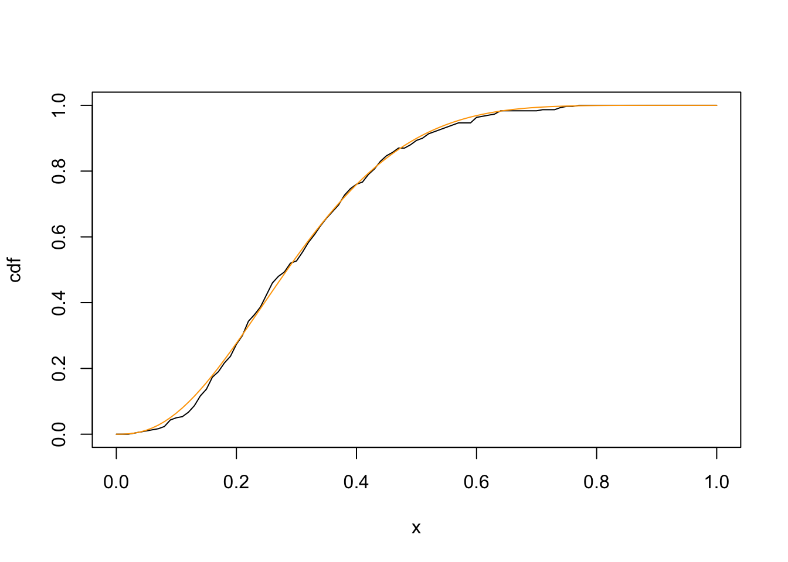

tmax <- (2.7 - 1)/(2.7 + 6.3 - 2)
dbeta(tmax, 2.7, 6.3)[1] 2.669744Suppose we wish to sample a continuous random variable with density \(f\) (the target density), and we have the ability to sample from some other distribution with probability function \(g\) (the candidate density), such that for some \(c > 0\),
\[\frac{f(t)}{g(t)} \leq c \hspace{1cm} \text{for all } t \text{ where } f(t) > 0\]
Acceptance-rejection sampling then generates \(X \sim f\) as follows:
In this activity, you will implement acceptance-rejection sampling for the Beta example discussed in class.
Suppose we wish to sample \(X \sim Beta(\alpha, \beta)\), with density \(f(x) = \frac{\Gamma(\alpha + \beta)}{\Gamma(\alpha)\Gamma(\beta)} x^{\alpha - 1} (1 - x)^{\beta - 1}\). Furthermore, we will suppose we are interested in a Beta distribution for which \(\alpha, \beta > 1\).
The Beta distribution is supported on \((0, 1)\), so a possible candidate distribution is \(Y \sim Uniform(0, 1)\) (i.e., \(g(t) = 1\) for all \(t \in (0, 1)\)).
If \(f\) is a \(Beta(\alpha, \beta)\) pdf with \(\alpha, \beta > 1\), and \(g = 1\) is the \(Uniform(0, 1)\) pdf, then a bit of calculus gives us that the maximum value of \(f(t)/g(t)\) occurs at
\[t_{\max} = \frac{\alpha - 1}{\alpha + \beta - 2},\]
and
\[c = \frac{f(t_{\max})}{g(t_{\max})}\]
In R: We can use R’s dbeta function to calculate the pdf of a beta distribution, and thereby calculate \(c\) given \(\alpha\) and \(\beta\). For example, suppose \(\alpha = 2.7\) and \(\beta = 6.3\). Then,
\[t_{\max} = \dfrac{2.7 - 1}{2.7 + 6.3 - 2} = 0.2428571\] and \(c \approx 2.70\)
tmax <- (2.7 - 1)/(2.7 + 6.3 - 2)
dbeta(tmax, 2.7, 6.3)[1] 2.669744Write a function in R called my_rbeta, which simulates from a beta distribution using acceptance-rejection sampling. Your function should satisfy the following requirements:
n: the number of samples to takea: the parameter \(\alpha\) of the Beta distributionb: the parameter \(\beta\) of the Beta distributionn from the specified Beta distributiona and b to be \(> 1\)Hints:
a and bExamples:
gridpts <- seq(0, 1, 0.01)
x <- my_rbeta(300, 2.7, 6.3)
plot(gridpts, ecdf(x)(gridpts), type="l", xlab="x", ylab="cdf")
lines(gridpts, pbeta(gridpts, 2.7, 6.3), type="l", col="orange")
gridpts <- seq(0, 1, 0.01)
x <- my_rbeta(300, 3, 3)
plot(gridpts, ecdf(x)(gridpts), type="l", xlab="x", ylab="cdf")
lines(gridpts, pbeta(gridpts, 3, 3), type="l", col="orange")When writing our function, we should think about possible errors that could arise when we call it. Note that for acceptance-rejection sampling to work with our Beta distribution, we want \(\alpha, \beta > 1\). (In general, \(\alpha, \beta > 0\) for a Beta distribution, but we acceptance-rejection sampling doesn’t work for all those values). If someone tries to sample from the Beta distribution with a bad parameter value, they should get an error message telling them that the inputs are wrong.
In R, we can include error messages inside functions using the stop() function. Here is an example in which we write our own square root function:
my_sqrt <- function(x){
if(x < 0){
stop("The square root of a negative number is complex")
}
x^(1/2)
}
my_sqrt(4)[1] 2my_sqrt(-4)Error in my_sqrt(-4): The square root of a negative number is complexTask: Update your my_rbeta function above to include an error message if the inputs a or b do not take values that allow acceptance-rejection sampling.
Example:
x <- my_rbeta(10, 0.5, 2)Error in my_rbeta(10, 0.5, 2): Acceptance-rejection sampling for the beta distribution requires a,b > 1